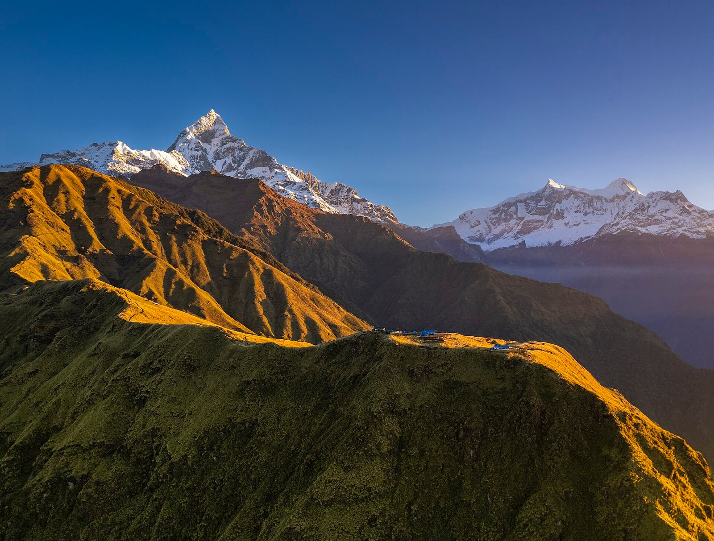
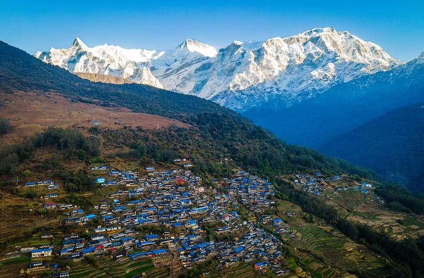
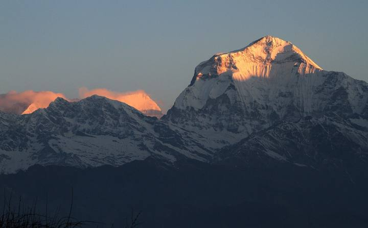

Khumai Danda
Four days north of Pokhara: a steep climb from Ghachowk through forest to Hile Kharka and the open ridge of Khumai Danda at 3,245 m, with basic lodges and Machhapuchhre close by.


- Duration
- 3–5 days
- Distance
- 28 kmapproximate
- Highest point
- 3,245 mKhumai Danda · 10,646 ft
- Highest night
- 3,245 mKhumai Danda
- Difficulty
- ModerateTeahouse lodges
- Best months
- Mar–Apr, Oct–Nov
Is this trek right for me?
The walking
4 days in all. Most walking days are 3 to 4 hours on foot, and the longest is about 6 hours. Five to seven hour days with real climbs, usually below 4,500 m.
The height
The highest night is at 3,245 m, and the plan gains height quickly on the way. Many people feel it. The day-by-day plan marks where: take that day slowly, or split it.
Where you sleep
In lodges every night: a simple twin room, a shared bathroom and hot meals in a warm dining room.
The help you need
The rules require a licensed guide on this route. A porter to carry your bag is your choice.
Overview
Khumai Danda is a grassy ridge at 3,245 m on the east side of the Seti gorge, to the south-east of Machhapuchhre. The trail was developed by the local municipality in recent years, as part of what it calls the Great Machhapuchhre Trail, and has become a favourite short trip for walkers from Pokhara, while few foreign trekkers have heard of it. It starts about an hour's drive from the city at Ghachowk, climbs one long spur through fields, forest and pasture, and comes back down the same way.
From the top you look straight across the gorge at Machhapuchhre, with Mardi Himal and Annapurna South to its left and Annapurna IV, Annapurna II and Lamjung Himal to the right. Pokhara and its lake lie far below to the south. A further two to three hours up the ridge is Korchon, a shoulder at 3,682 m with a wider view. It is an optional extra, and best left alone in cloud, wind or snow.
Do not mistake short for easy. The path gains about 2,000 m in two days and is steep nearly all the way, through fields low down and over roots and grass higher up. You sleep at 3,245 m on the second night, which is high enough for a headache. Lodges at Hile Kharka, Chichemle and Khumai Danda are basic: a few shared rooms with thin mattresses, a wood-fired kitchen, an outside toilet and not much water. No jeep track follows the ridge, so the only way down is on foot.
Highlights
- Machhapuchhre straight across the Seti gorge from the ridge
- Sunrise on the Annapurnas and Lamjung Himal from 3,245 m
- Rhododendron forest in flower in late March and April
- Far fewer foreign trekkers than on Mardi Himal
- An optional dawn climb to Korchon at 3,682 m
Moderate: Short, but steep throughout: about 2,000 m of climbing in two days to a night at 3,245 m, on a rough path with basic lodges and no road to fall back on.
Altitude profile
Height at the end of each day, with the high points in between. Dots are the places you sleep.
1 night gains height faster than the usual guideline. That is common on standard itineraries, but it is where problems start. Check how you feel before each of these climbs.
- Day 2, Khumai Danda: A climb of 1,085 m in one day, to sleep at 3,245 m. Go slowly, drink plenty, and say so if you get a headache.
Try adding a night in the acclimatization checker · Check your symptoms
Day by day
About 15–20 h of walking in total. Times are for a steady pace with short breaks; add more for photos and tea.
-
Day1
Drive to Ghachowk, walk to Hile Kharka
An hour or so by road, then across the Seti Khola by footbridge and straight into the climb: about 900 m up through terraced fields and the hamlet of Tubu, then forest. It is steep for most of the way, with little shade low down. Hile Kharka is a clearing with a few plain lodges. Be walking by ten.
2 places to stay in Hile Kharka, such as Hile Kharka and Hotel Peace Heven. See them
- Sleep at
- 2,160 m
- Change
- +910 m
- Walking
- 5–6 h
-
Day2
Hile Kharka to Khumai Danda
Hile Kharka to Chichemle to Khumai Danda
Up the spur through rhododendron forest to the lodge at Chichemle, then on steeper, narrower ground until the trees thin to scrub and grass below the top. You gain about 1,100 m and sleep at 3,245 m, so go slowly and drink often. Cloud usually comes in by midday; the view is for the evening and the dawn.
3 places to stay in Khumai Danda, such as Hotel 360 Khumai, Fishtail cottage khumai danda and Samsur Deurali (2930m). See them
Watch this gainA climb of 1,085 m in one day, to sleep at 3,245 m. Go slowly, drink plenty, and say so if you get a headache.
- Sleep at
- 3,245 m
- Change
- +1,085 m
- Walking
- 4–6 h
-
Day3
Dawn on the ridge, down to Hile Kharka
Khumai Danda to Chichemle to Hile Kharka
Watch the sun come up on Machhapuchhre from the ridge above the lodges. Strong walkers leave two hours before dawn for Korchon, the 3,682 m shoulder further up, and are back for a late breakfast; that adds four to five hours and is not needed for the view. Then go down the way you came.
2 places to stay in Hile Kharka, such as Hile Kharka and Hotel Peace Heven. See them
- Sleep at
- 2,160 m
- Change
- −1,085 m
- Walking
- 3–4 h
-
Day4
Hile Kharka to Ghachowk, drive to Pokhara
A steep 900 m descent through forest and terraces to the bridge over the Seti Khola, hard on the knees and slippery after rain. Have lunch in Ghachowk, then take a jeep, a taxi or the local bus back to Pokhara, an hour to an hour and a half away.
- Walk ends at
- 1,250 m
- Change
- −910 m
- Walking
- 3–4 h
Ways to change it
Three days
The usual plan for fit walkers: Korchon at dawn on day three, then all the way down to Ghachowk and back to Pokhara the same evening. That is eight to ten hours on your feet and well over 2,000 m of descent.
Five days, for a slower climb
Stop at Chichemle on the second night and go up to Khumai Danda on the third morning. Sleeping heights of about 2,160, 2,640 and 3,245 m are much kinder, and the short days leave time to rest. We would choose this for a first trek at altitude.
Korchon
From Khumai Danda the ridge path climbs another 440 m to Korchon at 3,682 m in two to three hours. Start with a head torch to be there for sunrise, take a guide who knows the way and turn round if cloud comes in. There is no shelter and no water.
Route map
The map loads when you scroll here. It needs a connection the first time; tiles you have viewed stay available offline.
The solid line follows footpaths mapped in OpenStreetMap. It is a guide to where the route goes, not a navigation track: trails are rerouted after landslides, so follow the signs and people on the ground. Marker positions come from OpenStreetMap where we could match a place, and from our own estimates elsewhere.
Download the trail for a map app A GPX file with 22 km of mapped path and every stop. It opens in free apps such as Organic Maps.
When to go
- January: difficult
- February: difficult
- March: best time
- April: best time
- May: good
- June: difficult
- July: difficult
- August: difficult
- September: good
- October: best time
- November: best time
- December: good
October and November are the clearest months, and in late March and April the rhododendron forest is in flower. Cloud usually covers the ridge by late morning in any season. From late December to February snow often lies above Chichemle and some lodges shut. In the monsoon the path is slippery, the forest is full of leeches and the mountains stay hidden.
Permits and guide rules
Guide required. Since April 2023 the Nepal Tourism Board has required foreign trekkers in conservation areas to walk with a licensed guide, though checks on the trail are inconsistent. On this ridge a guide matters for two plain reasons: the lodges have only a few beds and need a phone call ahead, and the path above Chichemle is narrow, grassy and easy to lose in cloud or snow.
ACAP
Conservation areaAnnapurna Conservation Area Permit · National Trust for Nature Conservation
| Foreign nationals | NPR 3,000 | person, single entry |
| SAARC nationals | NPR 1,000 | person, single entry |
Where: Online at NTNC's e-permit site, or in person at the Tourist Service Centre in Bhrikutimandap, Kathmandu, and the Nepal Tourism Board office in Pokhara. A permit issued at a trail checkpost costs double.
The fee includes tax and children under 10 do not need a permit. Paying online by card adds a 2.9% gateway charge. Covers every trek in the Annapurna range and Lower Mustang; Upper Mustang and Nar Phu need a restricted-area permit as well.
TIMS card
RegistrationTrekkers' Information Management System card · Nepal Tourism Board and the Trekking Agencies' Association of Nepal
| Foreign nationals | NPR 2,000 | person, per trek |
| SAARC nationals | NPR 1,000 | person, per trek |
Where: Only through a registered trekking agency, which applies in the Nepal Tourism Board's online system with your route and your guide's details. Individual trekkers can no longer buy one over the counter.
Since the revised rules of 31 March 2023 the card is tied to trekking with a licensed guide on the tourism board's listed routes. It is not used in Khumbu, where the municipality's Trek Card took its place in 2017. For restricted areas the published rules pull both ways: TAAN's pages say TIMS applies in every trekking area, restricted ones included, yet also list visitors holding Department of Immigration permits among those who do not need one, and agencies disagree. Your agency, which is compulsory there anyway, will know what the checkposts on your route ask for. Reports from 2025–26 describe patchy checks of the card, especially in Annapurna.
Agency required
Fees and rules change, sometimes mid-season. Treat these as a planning guide and confirm with the Nepal Tourism Board, the Department of Immigration or a registered agency before you travel. Last reviewed 2026-11. All permits and fees
Getting there
Ghachowk is an hour to an hour and a half north of Pokhara by taxi or jeep, on a road through Hemja, and a little longer by local bus. The trek returns to the same village. Above the Seti Khola there is no road, so once you start climbing there is no riding out part-way.
-
Jeep: Pokhara to Ghachowk · 1–1.5 hr
Taxi or hired jeep. Local buses also run from Pokhara and take up to two hours; ask at your hotel for the stand.
-
Jeep: Ghachowk to Pokhara · 1–1.5 hr
Fix a time with the driver before you set out, or take an afternoon bus. Phone signal on the ridge is patchy.
Hazards on this route
A big jump in sleeping height
The second day takes you from about 2,160 m to 3,245 m. Headache, poor sleep and loss of appetite are common at the top. Climb slowly and drink plenty. If symptoms get worse in the night, go down to Chichemle or Hile Kharka at first light, and do not go on to Korchon unless you feel well.
Steep ground, wet or dry
The trail is steep from the river to the ridge, on worn earth, roots and grass. After rain or frost it is slippery, and the two days of descent are where knees and ankles suffer. Two poles and boots with a deep tread make a real difference.
Cloud, cold and snow on the open ridge
Above Chichemle the path is narrow and open to the wind. Cloud can cut visibility to a few metres, and from December to March snow hides the trail and some lodges close. Do not go above the lodges, or on to Korchon, in cloud, strong wind or fresh snow.
Few beds and little water
Each stop has only a handful of rooms. On Saturdays and Nepali public holidays they fill with groups from Pokhara, and late arrivals may end up on the dining room floor. Water is short on the ridge, so expect none for washing and treat what you drink.
Practical tips
- Go midweek. At weekends and on public holidays the few rooms on the ridge are taken by walkers from Pokhara.
- Have your guide phone each lodge the day before. Outside the main seasons some close without notice.
- Bring a warm sleeping bag, a head torch and a power bank. Rooms are unheated, blankets are few and there may be nowhere to charge a phone.
- Carry two litres of water from Hile Kharka, and tablets or a filter for more.
- Take the descent over two days, as planned here. Going from the top to the road in one day is a drop of 2,000 m.
- Heights printed for Hile Kharka and Chichemle differ by 200 m or more between itineraries. The figures here are the ones most often given.
We know of no cash machines on this route. Carry all the rupees you need from Pokhara. Work out how much.
Plan this trek
Choose your dates and see the whole trip on one page: where you sleep each night, who can help you, what it may cost and the papers you need. Then ask for a price.
More tools for this trek
Who can help you on this trek
The rules require a licensed guide on this route. A porter to carry your bag is your choice.
-
A trekking company that arranges everythingOne price for everything on the trek. Ask two or three companies.
-
A guide, and a porter to carry your bagAbout USD 25 to 40 a day for the guide and USD 18 to 25 for the porter.
-
A guideAbout USD 25 to 40 a day.
-
A porter to carry your bagThe rules require a licensed guide on this route.
-
On your ownThe rules require a licensed guide on this route.
Do you work on the Khumai Danda route as a guide, porter or company? Join TrekkSewa.
Quick answers
How long does the Khumai Danda trek take?
Most people take 3–5 days. The itinerary on this page is 4 days.
How high does the Khumai Danda trek go?
The highest point is Khumai Danda at 3,245 m (10,646 ft). The highest place you sleep is Khumai Danda at 3,245 m.
How difficult is it?
We grade it moderate. Short, but steep throughout: about 2,000 m of climbing in two days to a night at 3,245 m, on a rough path with basic lodges and no road to fall back on.
Which permits do I need?
ACAP, TIMS card. Fees and where to get each one are listed in the permits section above.
Do I need a guide?
Since April 2023 the Nepal Tourism Board has required foreign trekkers in conservation areas to walk with a licensed guide, though checks on the trail are inconsistent. On this ridge a guide matters for two plain reasons: the lodges have only a few beds and need a phone call ahead, and the path above Chichemle is narrow, grassy and easy to lose in cloud or snow.
When is the best time to go?
Mar–Apr, Oct–Nov are best. October and November are the clearest months, and in late March and April the rhododendron forest is in flower. Cloud usually covers the ridge by late morning in any season. From late December to February snow often lies above Chichemle and some lodges shut. In the monsoon the path is slippery, the forest is full of leeches and the mountains stay hidden.
Stage plans on this route vary between operators; treat distances and times as approximate. Reviewed 2026-11. Trails, lodges and rules change; confirm locally before you rely on any detail. Report a correction.
Similar treks
More in Annapurna Annapurna
Annapurna
Mardi Himal
A narrow ridge walk to the foot of Machhapuchhre in five days

AnnapurnaSikles
A big Gurung village above the Madi Khola, and the forest ridge behind it

AnnapurnaGhorepani Poon Hill
A short loop through rhododendron forest to a famous sunrise ridge
 Annapurna
Annapurna
Mohare Danda
Village-run lodges on a quiet trail to a 3,300 m viewpoint